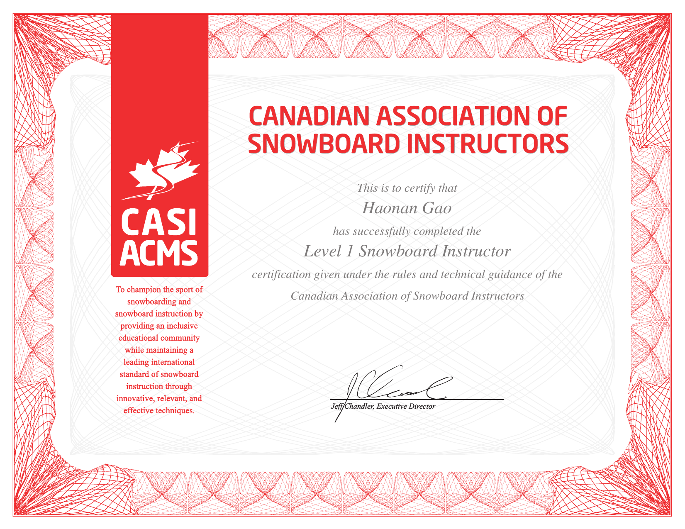

Beyond research
A few things I love when I’m away from my desk. If we share one of these — or you’ve been meaning to start — I’d genuinely love to connect. Don’t be shy to reach out.
On the mountain

Winters belong to the mountain. I’m a certified instructor with the Canadian Association of Snowboard Instructors (CASI), and few things beat helping a friend link their first turns and watching it finally click. Whether you’re planning a trip to the slopes or have always wanted to try riding, I’m a patient teaching buddy — let’s carve some laps together.
At the table
Away from the snow, I’m an avid Texas Hold’em player and jump into 5–10 multi-table tournaments (MTTs) every year. What keeps me hooked is the blend of probability, reads, and bankroll discipline — it’s a surprisingly statistical game, which might explain the appeal for a biostatistician. Always happy to talk strategy, trade bad-beat stories, or meet at a table.